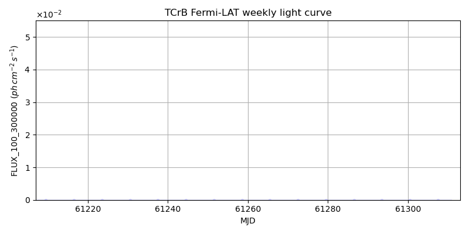

LAT Lightcurve site: https://fermi.gsfc.nasa.gov/ssc/data/access/lat/msl_lc/source/T_CrB
NED: Query
Time of last update of this page: UT: 2026-09-29 15:22 (MJD: 61312.640)
| Property | Value |
|---|---|
| R.A. | 15:59:30.24 |
| Dec. | 25:55:12.0 |
| z | 0.000 |
| 3FGL SpectrumType | |
| 3FGL PL Index | -1.00 |
| 3FGL Flux_100_300000 | -1.00e+00 |
| 3FGL Flux_1000_300000 | -1.00e+00 |
| 3FGL Flux >200 GeV | -1.00e+00 |
| 3FGL Extrap. Crab >200 GeV | -1.00 |
| 3FGL Flux After EBL Absorption >200GeV | -1.00e+00 |
| 3FGL EBL Crab Fraction >200GeV | -1.00 |
| MJD | dMJD | Flux | dFlux | Frac3FGL | FracCrab>200GeV | EBLFracCrab>200GeV |
|---|---|---|---|---|---|---|
| 61307.50 | 0.50 | 3.85e-07 | 0.00e+00 | 0.00 | 0.00 | -0.00 |
| 61308.50 | 0.50 | 1.04e-07 | 0.00e+00 | 0.00 | 0.00 | -0.00 |
| 61309.50 | 0.50 | 2.57e-07 | 0.00e+00 | 0.00 | 0.00 | -0.00 |
| 61310.50 | 0.50 | 2.62e-07 | 0.00e+00 | 0.00 | 0.00 | -0.00 |
| 61311.50 | 0.50 | 9.66e-08 | 0.00e+00 | 0.00 | 0.00 | -0.00 |

| MJD | dMJD | Flux | dFlux | Frac3FGL | FracCrab>200GeV | EBLFracCrab>200GeV |
|---|---|---|---|---|---|---|
| 61279.50 | 3.50 | 4.55e-08 | 0.00e+00 | 0.00 | 0.00 | -0.00 |
| 61286.50 | 3.50 | 2.40e-08 | 0.00e+00 | 0.00 | 0.00 | -0.00 |
| 61293.50 | 3.50 | 2.65e-08 | 0.00e+00 | 0.00 | 0.00 | -0.00 |
| 61300.50 | 3.50 | 1.13e-07 | 0.00e+00 | 0.00 | 0.00 | -0.00 |
| 61307.50 | 3.50 | 3.58e-08 | 0.00e+00 | 0.00 | 0.00 | -0.00 |
| MJD | dMJD | Flux | dFlux | Frac3FGL | FracCrab>200GeV | EBLFracCrab>200GeV |
|---|---|---|---|---|---|---|
| 61307.50 | 0.50 | 1.83e-08 | 0.00e+00 | 0.00 | 0.00 | -0.00 |
| 61308.50 | 0.50 | 1.94e-08 | 0.00e+00 | 0.00 | 0.00 | -0.00 |
| 61309.50 | 0.50 | 3.13e-08 | 0.00e+00 | 0.00 | 0.00 | -0.00 |
| 61310.50 | 0.50 | 2.27e-08 | 0.00e+00 | 0.00 | 0.00 | -0.00 |
| 61311.50 | 0.50 | 1.65e-08 | 0.00e+00 | 0.00 | 0.00 | -0.00 |
| MJD | dMJD | Flux | dFlux | Frac3FGL | FracCrab>200GeV | EBLFracCrab>200GeV |
|---|---|---|---|---|---|---|
| 61279.50 | 3.50 | 3.99e-09 | 0.00e+00 | 0.00 | 0.00 | -0.00 |
| 61286.50 | 3.50 | 2.67e-09 | 0.00e+00 | 0.00 | 0.00 | -0.00 |
| 61293.50 | 3.50 | 2.51e-09 | 0.00e+00 | 0.00 | 0.00 | -0.00 |
| 61300.50 | 3.50 | 2.30e-09 | 0.00e+00 | 0.00 | 0.00 | -0.00 |
| 61307.50 | 3.50 | 5.27e-09 | 0.00e+00 | 0.00 | 0.00 | -0.00 |
--------------------------------------------------------- Using user-supplied coords: 15:59:30.24 25:55:12.0 2000 --------------------------------------------------------- FLWO UT night of: 2026-09-30 Local Sid. @ Midnight: 00:12 Sunset (-15.0) (local, UT): 19:18 02:18 Sunrise (-15.0) (local, UT): 05:10 12:10 Moonrise (local, UT): 19:58 02:58 Moonset (local, UT): Moon phase: 0.84 --------------------------------------------------------- AzTime LSID UT Obj_el Obj_az Mn_el Mn_az Sep. --------------------------------------------------------- 19:18 19:29 02:18 44.3 276.5 -8.1 57.4 130.4 19:48 19:59 02:48 38.0 279.7 -1.6 61.4 130.4 20:18 20:29 03:18 31.7 282.8 3.0 65.1 130.3 20:48 20:59 03:48 25.5 285.9 8.5 68.5 130.3 21:18 21:29 04:18 19.4 289.0 14.3 71.8 130.2 21:48 21:59 04:48 13.5 292.3 20.3 74.9 130.1 22:18 22:29 05:18 7.7 295.8 26.3 78.0 130.1 22:48 22:59 05:48 2.2 299.5 32.4 81.0 130.0 23:18 23:29 06:18 -2.2 303.5 38.6 84.1 130.0 23:48 00:00 06:48 -8.8 307.8 44.8 87.4 129.9 00:18 00:30 07:18 -13.7 312.6 51.0 91.0 129.8 00:48 01:00 07:48 -18.2 317.9 57.3 95.1 129.8 01:18 01:30 08:18 -22.2 323.6 63.5 100.2 129.7 01:48 02:00 08:48 -25.7 330.0 69.6 107.2 129.6 02:18 02:30 09:18 -28.6 336.9 75.4 118.5 129.6 02:48 03:00 09:48 -30.7 344.3 80.3 140.5 129.5 03:18 03:30 10:18 -32.0 352.0 82.4 184.0 129.5 03:48 04:00 10:48 -32.5 0.0 79.7 224.8 129.4 04:18 04:30 11:18 -32.0 8.0 74.6 244.7 129.4 04:48 05:00 11:48 -30.7 15.8 68.8 255.2 129.4 05:10 05:23 12:10 -29.2 21.4 64.2 260.5 129.3 --------------------------------------------------------- Dark hours >55 deg.: 0.00